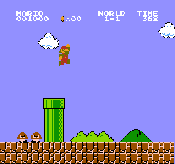

El personaje cobra vida
CharacterBody2D, colisiones y el sistema de señales: el personaje al fin choca con el mundo… y el mundo le responde. Todo escrito en vivo.
“Hasta ahora movíamos cosas. Hoy hacemos que interactúen.”
Cómo va a ser la clase de hoy
🔴 Cuatro bloques en vivo
En un proyecto nuevo, clase-04, armamos juntos:
01_cuerpos: los tres cuerpos físicos, cayendo02_nivel: el jugador que camina, salta y pisa el suelo03_moneda: una escena aparte que avisa cuando la tocan- Grupos: varias monedas y un contador de puntos
👐 Las reglas de siempre
- El código se escribe, no se pega. Los nodos también: nada de abrir un proyecto ya armado.
- Cada bloque termina con un punto de control: algo que tiene que pasar en pantalla o en la consola.
- Si algo no choca o una señal no dispara, hay una diapo de errores típicos al final. Pero primero: ¿tiene
CollisionShape2D?
¿Por qué uno cae y el otro no?
🕳️ Escena A
Un sprite atraviesa el suelo y cae al vacío, como si el piso no existiera.
🧍 Escena B
El mismo personaje aterriza sobre la plataforma, y hasta salta.
Tres tipos de cuerpos físicos
| Nodo | ¿Para qué sirve? |
|---|---|
StaticBody2D | No se mueve. Suelo, paredes, plataformas fijas. El motor lo respeta pero nunca lo mueve. |
CharacterBody2D | Lo controla el programador, por código. El personaje jugable, enemigos con IA. Sin gravedad automática. |
RigidBody2D | Lo mueve el motor con física realista: gravedad, rebote, impulsos. Objetos que se tiran o explotan. |
CharacterBody2D es un actor dirigido por el programador. RigidBody2D es un extra que, si lo empujan, se cae solo. StaticBody2D es la escenografía.🧊 Los tres tienen su equivalente en 3D: StaticBody3D, CharacterBody3D y RigidBody3D, igual que Area3D y CollisionShape3D. Se usan de la misma forma; lo que se aprende en 2D sirve para 3D.
La regla práctica
El jugador
Siempre CharacterBody2D. Control preciso, sin rebotes raros.
El suelo
Siempre StaticBody2D. Fijo, sólido, no se mueve nunca.
Lo que se tira
Siempre RigidBody2D. Cajas, barriles, proyectiles físicos.
RigidBody2D congelado: hoy lo hacemos bien.Cada tipo, en un juego real


Angry Birds: un pájaro impactando la estructura, bloques volando
Escena 01_cuerpos: los tres, cayendo
Sin una línea de código
Cuerpos (Node2D) ├── Suelo (StaticBody2D) │ ├── Sprite2D # icon.svg, escala 6 × 0.5, verde │ └── CollisionShape2D # Rectangle ├── Caja (RigidBody2D) │ ├── Sprite2D # icon.svg, escala 0.4 │ └── CollisionShape2D # Rectangle └── Heroe (CharacterBody2D) ├── Sprite2D # icon.svg, escala 0.4, azul └── CollisionShape2D # Rectangle
Los tres arriba del suelo, uno al lado del otro. Nada más. F6.
- Proyecto
clase-04. Escena nueva, raízNode2DllamadaCuerpos - El suelo:
StaticBody2Dcon sprite y colisión, eny = 300 - La caja y el héroe, igual, en
y = 0 - F6 y mirar qué hace cada uno
CollisionShape2D al suelo. Después, al Suelo ponerle Rotation = 15: la caja resbala, el héroe sigue flotando. ¿Por qué?¿Por qué no alcanza con position.x += ...?
En la Clase 3 movíamos cambiando position directamente. Sirve para objetos que no chocan con nada. El héroe del bloque 1 flota por eso: nadie le dijo que caiga.
🚗 move_and_slide()
Mueve el CharacterBody2D usando su variable velocity (un Vector2), detecta las colisiones en el camino y ajusta el movimiento automáticamente, incluso deslizándose por las paredes.
Movimiento de plataformas, paso a paso
extends CharacterBody2D const VELOCIDAD = 200.0 const GRAVEDAD = 900.0 const FUERZA_SALTO = -400.0 # negativo = arriba (Y invertido) func _physics_process(delta): # 1. Gravedad: se acumula en el aire if not is_on_floor(): velocity.y += GRAVEDAD * delta # 2. Input horizontal: -1 / 0 / 1 var dir = Input.get_axis("mover_izquierda", "mover_derecha") velocity.x = dir * VELOCIDAD # 3. Salto: solo si toca el suelo if Input.is_action_just_pressed("saltar") and is_on_floor(): velocity.y = FUERZA_SALTO # 4. Que Godot resuelva las colisiones move_and_slide()
Las cuatro partes del patrón
| Paso | Qué hace |
|---|---|
| 1 · Gravedad | velocity.y += GRAVEDAD * delta: se acumula (por eso +=) mientras not is_on_floor(). Sin esto, flota. |
| 2 · Input | get_axis() devuelve un número entre -1 y 1. Multiplicado por la velocidad, da la parte horizontal del vector. |
| 3 · Salto | Un impulso hacia arriba (velocity.y negativo), solo si está en el suelo. Si no, saltaría en el aire. |
| 4 · Mover | move_and_slide() aplica velocity, resuelve choques y actualiza is_on_floor(). Notar que no multiplica por delta: lo hace por dentro. |
_physics_process() porque choca con cosas.CollisionShape2D: la silueta física
Un cuerpo físico por sí solo no tiene forma. Necesita un nodo hijo CollisionShape2D que define su “silueta” para las colisiones.
CollisionShape2D o su shape está vacío (el triángulo amarillo ⚠️ al lado del nodo lo avisa).| Shape | Ideal para |
|---|---|
RectangleShape2D | Personajes humanoides y cajas. La más común. |
CapsuleShape2D | Personajes que se deslizan suave por esquinas. |
CircleShape2D | Objetos redondos: pelotas, monedas. |
Escena 02_nivel: el jugador pisa el suelo
# jugador.gd, en el nodo Jugador (CharacterBody2D) extends CharacterBody2D const VELOCIDAD = 200.0 const GRAVEDAD = 900.0 const FUERZA_SALTO = -400.0 func _physics_process(delta): if not is_on_floor(): velocity.y += GRAVEDAD * delta var dir = Input.get_axis("mover_izquierda", "mover_derecha") velocity.x = dir * VELOCIDAD if Input.is_action_just_pressed("saltar") and is_on_floor(): velocity.y = FUERZA_SALTO move_and_slide()
Nivel (Node2D) ├── Suelo (StaticBody2D) + Sprite2D + CollisionShape2D └── Jugador (CharacterBody2D) + Sprite2D + CollisionShape2D
- Escena nueva
02_nivel: el suelo y el jugador como en el bloque 1 - Input Map:
mover_izquierda(A, ←),mover_derecha(D, →),saltar(Espacio) - Script
jugador.gd: solo gravedad ymove_and_slide(). Correr: cae y aterriza - Sumar el input horizontal. Correr. Después el salto
GRAVEDAD = 200 (la Luna). Sacar el and is_on_floor() y saltar en el aire. Poner el patrón en _process() en vez de _physics_process(): anda, pero ya se vio por qué no va ahí.¿Qué son las Señales?
El sistema de comunicación de Godot. Permiten que un nodo avise que pasó algo, sin que los nodos necesiten conocerse.
🔔 Analogía: la campana
La moneda toca una campana cuando la agarran. Cualquiera que esté “escuchando” reacciona.
La moneda no sabe quién escucha, solo toca la campana. Eso las hace flexibles.
El flujo de una señal
1 · Emitir
Un nodo emite la señal cuando ocurre algo
2 · Conectar
Otro nodo conecta la señal a una de sus funciones
3 · Reaccionar
Al emitirse, la función conectada se ejecuta sola
Las señales más comunes
| Nodo | Señal | Se emite cuando… | Cuándo se usa |
|---|---|---|---|
Area2D | body_entered(body) | un cuerpo entra en la zona | Hoy: la moneda |
Area2D | area_entered(area) | otra área entra en la zona | Semana 3: balas contra slimes |
Timer | timeout | se acaba el tiempo | Semana 3: spawnear enemigos |
Button | pressed | el jugador hace clic | Semana 5: menús |
AnimatedSprite2D | animation_finished | termina una animación | Volver a “idle” después de atacar |
_ready() y _process(): no son señales, son funciones que Godot llama solo. La idea es parecida (Godot avisa que pasó algo y el programador escribe qué hacer), pero con las señales se elige qué avisos escuchar y quién responde.Area2D: el detector de zonas
Detecta cuándo otros cuerpos entran o salen de una zona. No bloquea el paso (a diferencia de StaticBody2D): solo detecta.
| Señal | Cuándo se emite |
|---|---|
body_entered(body) | Entra un CharacterBody2D o RigidBody2D. Daño, recolección. |
body_exited(body) | El cuerpo sale del área. |
area_entered(area) | Entra otra Area2D. Zona contra zona. |
Area2D escuchando body_entered.Conectar una señal sin código
- Seleccionar el nodo
Area2D - Panel lateral Node (al lado del Inspector) → pestaña Signals
- Doble clic en
body_entered(body: Node2D) - Elegir el nodo que va a recibir la señal (tiene que tener script)
- Connect
Godot genera la función sola en el script del receptor, y le pone un ícono ⚡ al lado.
# Función generada automáticamente func _on_body_entered(body): # 'body' es el nodo que entró print("Algo entró: " + body.name)
Escena 03_moneda: la moneda avisa
Moneda (Area2D) ← escena propia: 03_moneda.tscn ├── Sprite2D # icon.svg, escala 0.25, amarillo └── CollisionShape2D # CircleShape2D
# moneda.gd extends Area2D # Conectada desde el editor: Node → Signals → body_entered func _on_body_entered(body): print("Algo entró: " + body.name) queue_free() # la moneda se borra sola
Después, en 02_nivel: botón 🔗 Instantiate Child Scene → 03_moneda.tscn. Una moneda aparece en el nivel; moverla al costado del jugador.
- Escena nueva con raíz
Area2DllamadaMoneda, sprite y círculo. Guardar como03_moneda.tscn - Script
moneda.gd. Conectarbody_entereddesde el editor a la propia moneda - Solo el
print. Instanciar en02_nivel, correr, pasar por encima - Sumar
queue_free(). Correr de nuevo
RigidBody2D que caiga sobre la moneda: Algo entró: Caja. ¿Cómo hacemos que solo cuente el jugador? Eso es el bloque 4.Lo mismo, conectado por código
# moneda.gd, sin tocar el editor extends Area2D func _ready(): # señal.connect(función) body_entered.connect(_on_body_entered) func _on_body_entered(body): print("Algo entró: " + body.name) queue_free()
¿Cuál conviene?
- Editor: rápido, y la conexión se ve con el ⚡. Ideal para empezar
- Código: queda todo en un lugar y funciona aunque instancies la escena por código (semana que viene)
- Nunca las dos a la vez: la función se ejecutaría dos veces
Area2D tenga un CollisionShape2D hijo con shape asignado. Sin shape, el área no tiene volumen y nunca detecta nada.Grupos: una etiqueta para muchos nodos
Permiten etiquetar nodos para preguntar “¿es un jugador?” o para hablarle a todos los de ese tipo a la vez.
"enemigo".# Etiquetar un nodo (en _ready): func _ready(): add_to_group("jugador") # ¿Pertenece a un grupo? if body.is_in_group("jugador"): print("El jugador tocó el área") # Llamar una función en TODO un grupo: get_tree().call_group("enemigos", "recibir_dano", 50)
Solo el jugador suma, y suma de verdad
# jugador.gd: agregar esto var puntos = 0 func _ready(): add_to_group("jugador") func sumar_punto(): puntos += 1 print("¡Moneda! Puntos: " + str(puntos))
# moneda.gd: la función queda así func _on_body_entered(body): if body.is_in_group("jugador"): body.sumar_punto() # le pide al jugador queue_free()
- El jugador se etiqueta en
_ready()y ganasumar_punto() - La moneda pregunta
is_in_groupantes de hacer nada - En
02_nivel, seleccionar la moneda y Ctrl+D dos veces. Repartirlas - Correr y juntar las tres
03_moneda.tscn (el sprite más chico): las tres cambian. Eso es la escena como molde, de la Clase 1.Cuando “no anda”: los cinco sospechosos
| Síntoma | Casi siempre es… |
|---|---|
| El jugador atraviesa el suelo o la moneda no detecta nada | Falta el CollisionShape2D, o tiene la shape vacía (⚠️ amarillo). Uno de los dos nodos, no solo el que se está mirando. |
| La señal se conecta pero la función no corre | El nombre de la función en el script no coincide con el que se conectó. Mirar el ⚡ al lado de la función. |
| Se ejecuta dos veces | Se conectó desde el editor y por código. |
Invalid call. Nonexistent function 'sumar_punto' | Entró otro cuerpo (la caja). Faltó el if body.is_in_group("jugador"), o el jugador no está en el grupo. |
| La moneda se mueve con el jugador | Se instanció como hija del Jugador. Tiene que ser hija de Nivel. |
Desafío: dos zonas más, con lo mismo
- Pinchos: una escena
Area2Droja. Cuando entra el jugador, imprime¡Ouch!y le resta vida (el jugador necesitavar vida = 3yrecibir_dano()) - Meta: otra
Area2Dal final del suelo. Al entrar el jugador, imprime¡Nivel completado con N puntos! - Extra: con
body_exited, que los pinchos imprimanZafastecuando el jugador sale
Area2D + shape → señal → is_in_group → función del jugador.🛟 Si algo se traba
- ¿Los dos tienen
CollisionShape2Dcon shape? - ¿La función tiene el ⚡ al lado?
- ¿El jugador tiene la función que se le pide?
Todo lo que armaron hoy
| Concepto | Para qué sirve | Bloque |
|---|---|---|
| Tres cuerpos | Static para lo fijo, Character para lo que controla el jugador, Rigid para lo que cae solo | 01_cuerpos |
move_and_slide() | Mover con velocity y que el motor resuelva los choques | 02_nivel |
| Señales | Un nodo avisa, otro reacciona, sin conocerse | 03_moneda |
Area2D | Detectar sin bloquear: monedas, daño, metas | 03_moneda |
| Grupos | Etiquetar para preguntar “¿quién es?” o hablarle a todos | Bloque 4 |
El TP de la semana
📝 TP 2: un personaje que se mueve, y un plataformero
- Parte A: movimiento en 4 direcciones con
delta, Input Map yclamp()(lo de la Clase 3) - Parte B: lo de hoy, pero con un caballero animado, un mapa de tiles y monedas de verdad
- Con cuadrados sale igual: los sprites son el premio, no el requisito
📚 Recursos
- Docs: Physics introduction y Using signals en
docs.godotengine.org - La referencia de
CharacterBody2Dy deArea2D - Traer el proyecto
clase-04: el TP le pone arte a lo mismo
“Hasta ahora movíamos cosas. Hoy hicieron que interactúen.” · Logo y mascota de Godot © Godot Foundation — CC BY 4.0.